Prediction for time series data using RNN with GRU layers
Compared to densely connected (feed forward) neural networks, recurrent neural networks (RNN) have better
capability to model sequence data (such as text and time series data) by maintaining an internal
loop over sequence elements. This project discusses how to use RNN with gated recurrent unit (GRU)
layers to model the PM2.5 pollution real time data. The goal is to develop some guidelines and insights
as how to apply deep learning methods to process high resolution time series data.
Models are built using Keras.
Understand the data using Exploratory Data Analysis (EDA)
The data used in this project is the Beijing PM2.5 dataset, contains hourly PM2.5 and other
information from 2010 - 2014 (5 years). Features are numerical and categorical include:
dew point, temperature, pressure, wind direction, wind speed, cumulative hours of snow and rain.
Two time series plots of the dataset are shown below. The first plot shows the PM2.5 over 5 years and the
second plot shows annual PM2.5 (different years' data is on top of each other).
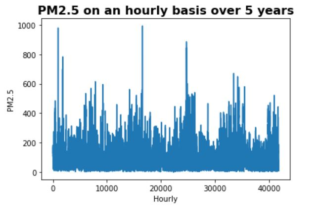
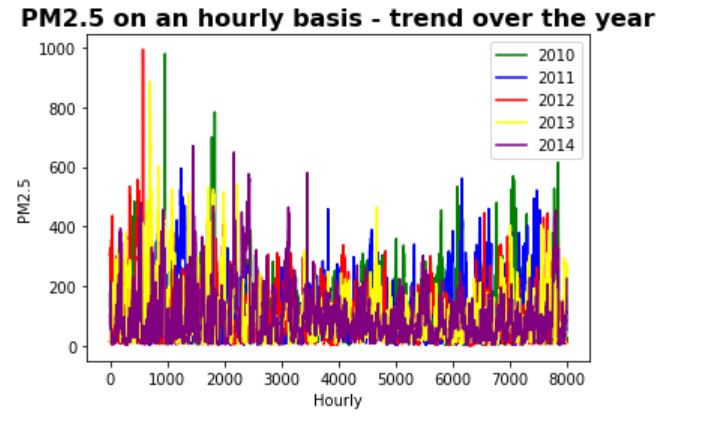
Some of the observations are:
- Overall trend - PM2.5 seems to show a slowly decreasing trend over the years
- Seasonality - PM2.5 seems to be the highest in spring, lowest in summer/fall,
and medium in winter
The correlation matrix for numerical features as well as the distribution of PM2.5 are shown below.
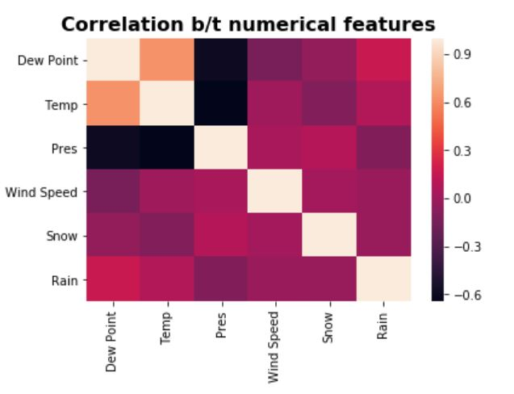
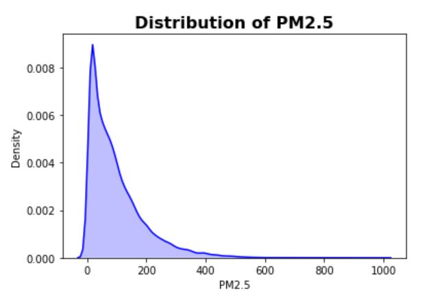
- Correlation matrix - Except dew point and temperature, the features are not strongly
correlated (and also the number of features is small, so no dimension reduction needs to be
used)
- Distribution plot - targets have a fat tail (which makes prediction more challenging as
there can be many outliers outside the general pattern)
Three Baseline Models & Predictions
Before building RNN models, three baseline or alternative models are built for predictions. This step
is important as the final RNN model can only be accepted if it can beat the performance of the cheaper and
simpler alternative models. For this problem, the following three types of models are used as baselines:
1. Seasonal ARIMA model - classical linear time series model for seasonal data
2. Gradient Boosting - ensemble tree methods (popular for structured data)
3. Densely Connected Network
1. Seasonal ARIMA model
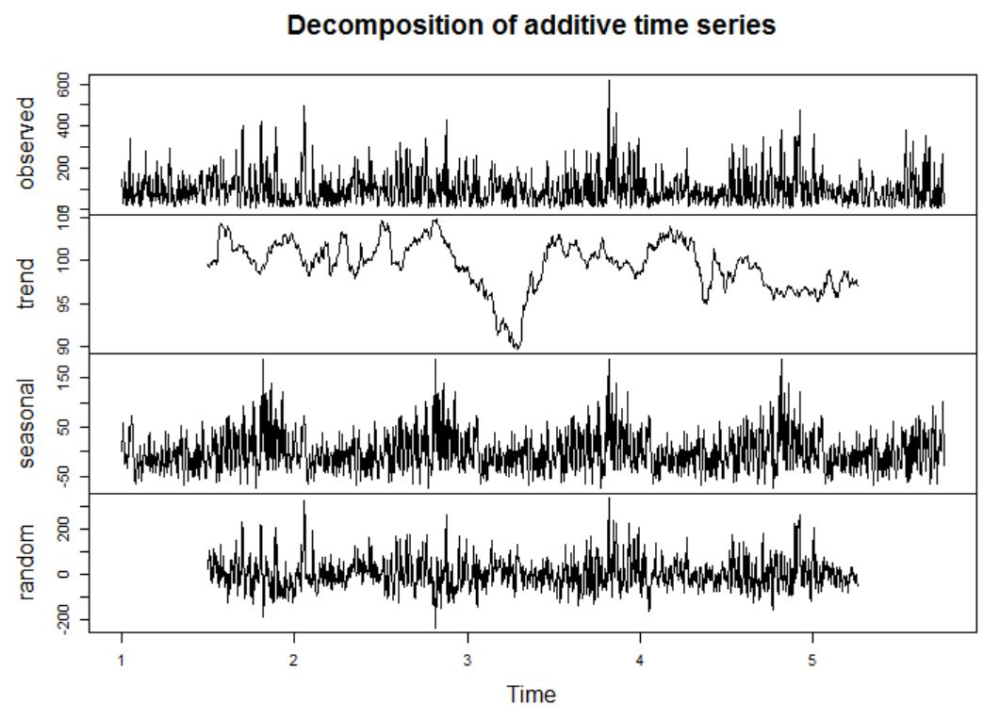
The time series model only uses the targets (PM2.5) and is not using the feature data (and therefore
not a supervised problem). From the ETS decomposition plot, the PM2.5 data seems to be stationary (agrees
with the ADF test results - very small p-value), and has strong seasonal patterns.
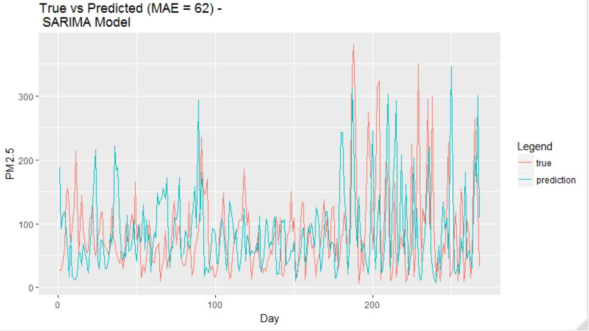
The prediction result using a fitted ARIMA(2,0,3)(0,1,0) model is shown above. Note that the SARIMA model is
fitted using the daily average PM2.5 data as in general ARIMA models are designed for shorter period data
such as 12 for monthly due to estimation challenges.
Here, it can be seen that the SARIMA model actually does a decent job in capturing the overall pattern.
This shows that the PM2.5 data has a strong global ordering pattern.
Remarks:
- Advantage #1: Compared to machine learning algorithms, time series models such as seasonal ARIMA
can also provide prediction intervals to show prediction uncertainties.
- Advantage #2: Fitting a time series model such as seasonal ARIMA is computationally efficient,
in this case, only need to select and estimate 6 parameters (p, d, q, P, D, Q).
- Disadvantage #1 : Time series models such as seasonal ARIMA usually cannot handle very long period
(high resolution) data due to estimation and memory challenges. Therefore, in this case, it
is impossible to make hourly prediction using the model. Some alternatives do exist, for example,
using the Fourier series approach to model the seasonal part.
- Disadvantage #2 : Most time series models such as seasonal ARIMA (which is a linear model and
can only model stationary data) in general can only capture simple structures compared to
complex models such as RNN. This will significant limit its use in more complex data such as
text.
- Disadvantage for this problem : Time series models are not for supervised learning problems,
and therefore in this case all features are not being used (which lost a lot of information).
2. Gradient Boosting Machine (GBM)
Gradient boosting is a very popular machine learning algorithm for structured data,
which uses an ensemble of weak successive learners (trees) where each tree learns from the previous and
gradually improve the performance (compared to Random Forest where an ensemble of independent trees are
built). In practice, GBM is much easier to tune than neural networks (less number of hyper parameters to
tune) and is more computationally efficient. In this case, only two parameters are tuned: number of learners
and the learning rate.
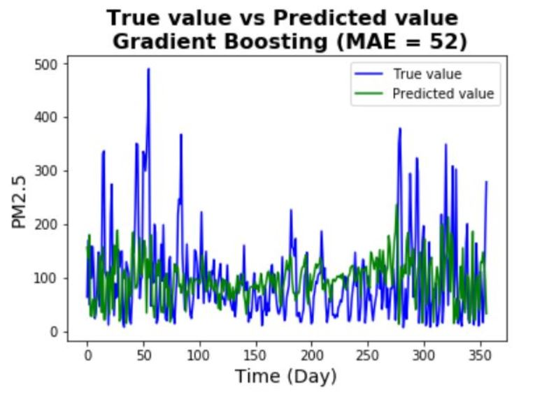
The prediction result using a GBM is shown above. Note that the GBM makes hourly prediction (in the graph
the hourly predicted values are averaged to obtain the daily predictions). It can be seen that the
prediction accuracy is better than the seasonal ARIMA model (MAE is much lower), the MAE is still high
but given the fact that the PM2.5 is pretty noisy, the performance is acceptable (also the fact that
not a lot of effort is spent on tuning the hyper parameters due to time constraint).
Remarks:
- Advantage #1: GBM (and also other tree-based methods) is that no data pre-processing is
needed (scaling features, encoding categorical features) although feature engineering sometimes can
still improve the performance. In this case, the features are normalized (as later will be used
for other models).
- Advantage #2: GBM (and also other tree-based methods) can handle missing values (no imputation is
needed). However, sometimes it is still a good idea to impute missing values before building the
model.
- Advantage #3: Compared to deep learning algorithms, GBM (and also other tree-based methods)
are more interpretable by using tools such as variable importance, partial dependence plots,
LIME (although not as natural as statistical models such as GLMs).
- Advantage #3: Compared to deep learning algorithms, GBM (and also other tree-based methods)
are more interpretable by using tools such as variable importance, partial dependence plots,
LIME (although not as natural as statistical models such as GLMs).
- Disadvantage for this problem : GBMs use all features in this supervised learning problem but
has no capability of utilizing the global ordering pattern (recognizing it is a sequence data).
3. Densely Connected Networks
Before actually building a RNN, a simple DNN model (with a single layer) is built to see the performance
of ignoring the sequence pattern of the data.
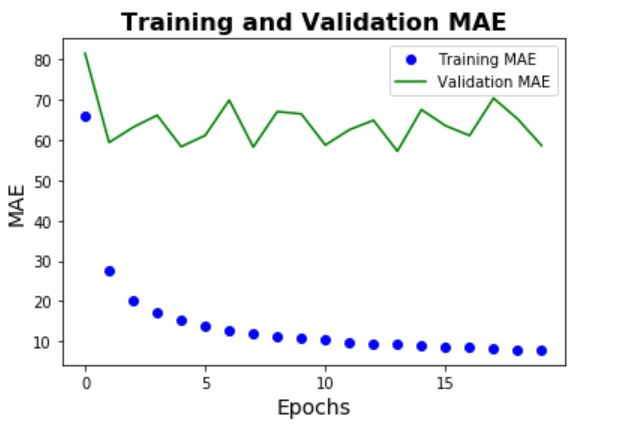
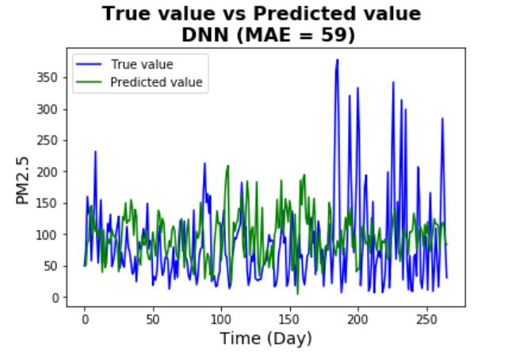
One thing to note that the model shows significant overfitting (validation error stays flat and
high above the training error). This possibly shows that the hypothesis class is not rich enough
to fit the model (possibly because it's too simple and shallow). The prediction performance is
better than the seasonal ARIMA model but not as good as the Gradient Boosting machine.
Remarks:
- Because the dataset is large and dense, data generator functions (train, validation,
test) are used to improve the computational efficiency. Here, observations are looked
back 3 months (as indicated by seasonal patterns) and sampled every 6 steps (6 hours). Here
are some of the advantages of using generator functions:
- Generator functions allows to declare a function like an iterator, which can be used in a
for loop
- Generators use lazy generation of values (use data on the fly rather than wait for all data
to be ready to use), and therefore results in lower memory usage
- Generators use simpler and more compact codes than iterators
- A small batch size of 128 samples are used for fitting the model. In general,
training length = batch size * steps per batch. Small batch size can result in slower computation
speed but often can improve on accuracy.
- Large batches: very few # of epochs needed (always go toward the local min) which means can
converge very fast. However, sometimes can got stuck in local optima and causes much lower
accuracy.
- Small batches: more epochs needed (causes oscillation toward local min) and can converge slowly.
However, it can help jump out of local optima and gets closer to global optima and therefore
usually higher accuracy.
Simple RNN
GRU vs LSTM
GRUs are still relatively new compared to the well-known LSTM (Long Short Term Memory) for RNNs, they have
similar mechanism as LSTM but has fewer gates and therefore is more computationally efficient
(especially for long sequences where training RNNs can be very expensive). It is believed that in many
applications GRUs have comparable performance as LSTM (although in theory the gain in computational
efficiency is likely to come with less powerful representational capability). For this task because time
constraint is a big issue, GRU layers are used instead of LSTM.
The first step of building the final RNN model is to start with a simple RNN model (with a single small GRU
layer - same size as the DNN model). Compared to the DNN model, the prediction accuracy has a significant
improvement but still not as good as the Gradient Boosting machine. Two things can be concluded:
- From the training vs validation error plot, it is clear that there is significant overfitting -
this means regularization needs to be applied to the model.
- Compared to the training error, the validation errors seem to have much bigger fluctuations. This
is pretty common for validation errors, possible solution includes tuning the learning rate
or choose different optimizers.
- Another observation is that the test error is much higher than the validation error. This usually
implies that the test data may have a different distribution (and thus pattern) compared to the
validation data. In this case, we know the PM2.5 data has an overall trend so it is possible that
the training, validation, and test data could have different distributions.
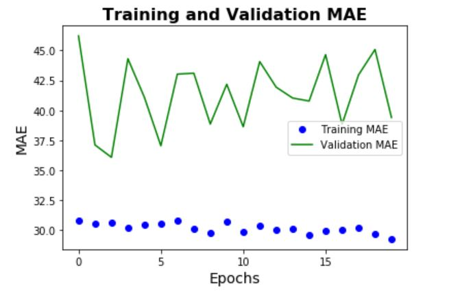
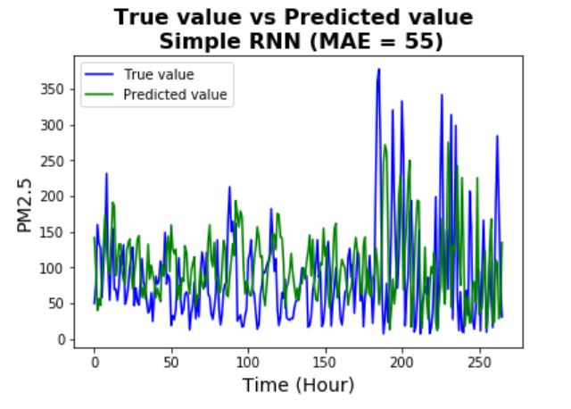
Simple RNN - Regularized
In general, overfitting can be reduced by the following methods:
- Get more training data (this is the most efficient way but is often not possible)
- Make the model simpler (such as reduce the size and number of hidden layers)
- Weight (parameter) regularization (for example, L1 or L2 regularization, similar to linear models)
- Adding dropout - randomly set a number of output features to zero (for RNN, apply the same
dropout rate from time to time, but can use different dropout rates for input units and recurrent
units)
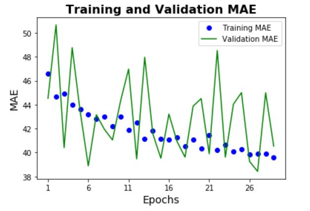
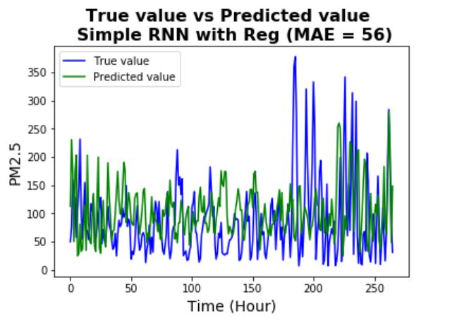
Here, the dropout method is being used (a rate of 0.2 is used) for both input units and recurrent units.
It can be seen that the validation scores are now more consistent with the training scores (although
it still has big fluctuations). Also, it is not surprised to see that the prediction performance of the
regularized version is very similar to the unregularized version - regularization in general should not
decrease the accuracy of the model.
Now, as the RNN is not overfitting but seems to reach the cap of performance, the next step is to
increase the capacity of the model.
More Complex RNN
To increase the capacity of the model, a more complex RNN model is used (with two layers and each layer
is now having bigger size). Once again regularization using dropout is used to reduce overfitting.
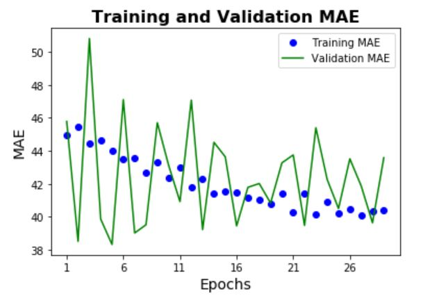
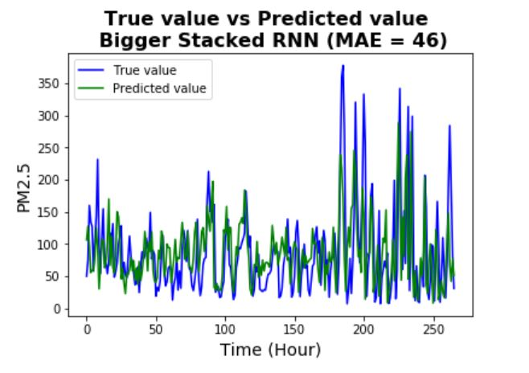
By increasing the capacity of the model, the prediction accuracy has been improved significantly (and
also seems it is not overfitting significantly).
From the plot, it can be seen that the model is pretty successful in capturing most of the patterns (even
many of the complicated patterns).
Remarks:
- It should be noted that the stacked RNN model is much more expensive than the simpler RNN models,
as the number of trainable parameters have increased dramatically.
- Further steps could include: increase the capacity of the model again (more number of layers and
bigger size of each layer), tune the learning rate, choose other optimizers, increase the number of
steps per epoch, etc.
Combing CNN and RNN together
One of the new approaches to process long sequences is to combine a 1D ConvNet with RNN by using the
1D CNN as a preprocessing step before the RNN step. The idea is to convert the long input sequences into
shorter sequences of higher level features, and then use those features as input into the RNN. The main
advantage of this approach is to provide a computational efficient alternative to RNNs, as 1D CNNs are
much cheaper.
Here, the model consists of stacking 1D Conv layers and 1D Max Pooling layers before a two layer RNN (same size
as previous model).
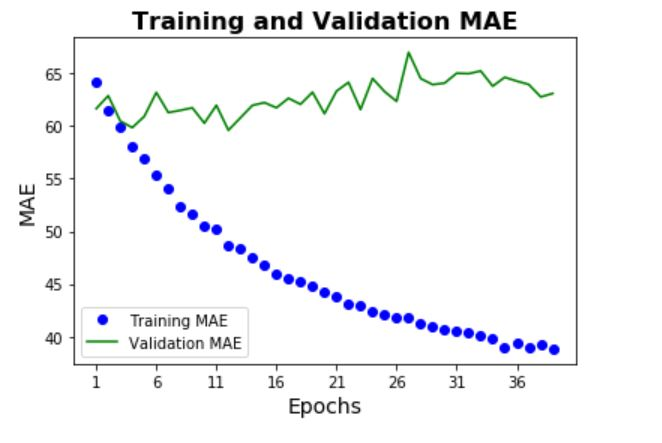
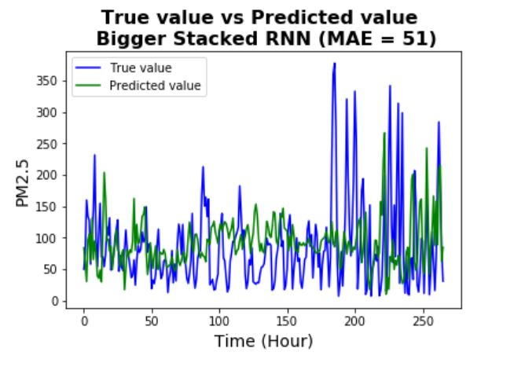
As seen from the results, the 1D CNN - RNN is not performing as well as the two layer RNN (possibly at the cost
of using preprocessed high level features by CNN), but still has better performance than simpler RNNs and
baseline models. It should be noted that the training time for this model is much shorter than the same sized
RNN model - which gives a good computationally efficient alternative to complex RNNs on long sequences (at the
cost of some prediction accuracy).
Remarks:
- One of the reasons that the 1D CNN - RNN model is not performing as good as in some other applications
(such as sentiment analysis) is that here the PM2.5 values have strong long period global ordering
patterns. Because CNNs are doing no effort to capture temporal structures but instead looking for
patterns around in any order of time steps, the temporal information is likely to be less successfully
processed compared to a RNN alone.
Summary
The goal of this exercise is to understand various types of prediction models for high resolution time
series data. Models used include seasonal ARIMA, Gradient Boosting Machine, Densely Connected Network,
Recurrent Neural Networks, as well as 1D Convolutional Neural Network combined
with Recurrent Neural Networks.
Although for this particular problem RNNs seem to the best choice, other alternative models do have their
own advantages such as computational efficiency, uncertainty estimations, etc. Therefore, choosing the best
model in many applications usually depend on not only the prediction accuracy, but also on
other measures so that some ultimate goals can be reached. However, it is always a good idea to try various
types of approaches in order to find the best solution to a problem.
Last updated on Dec 1, 2019